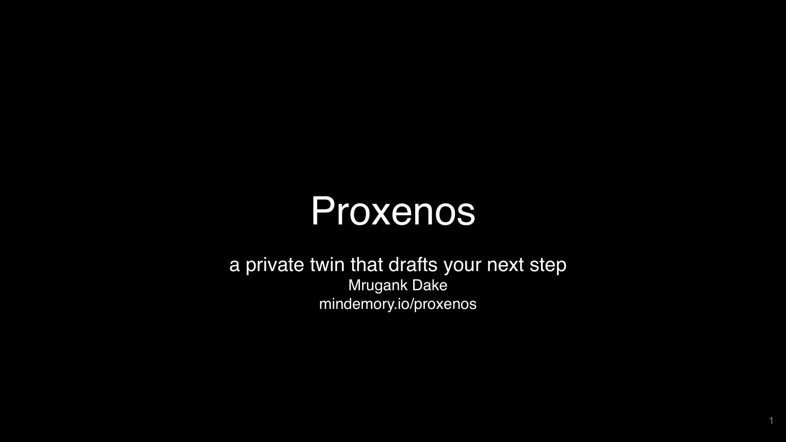
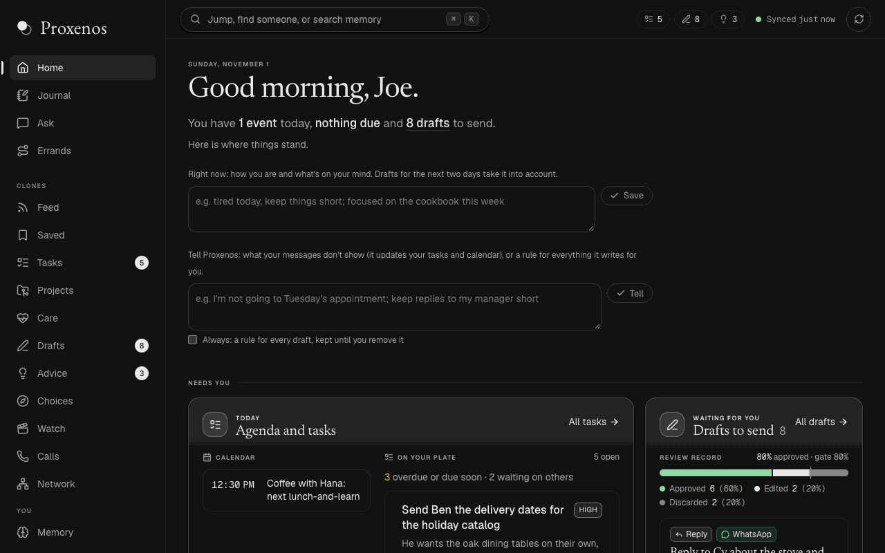
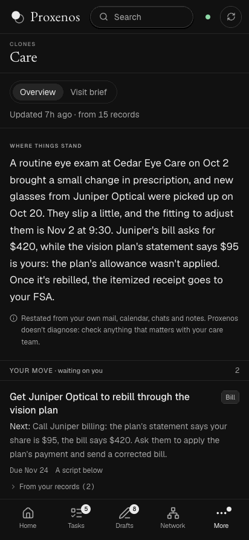
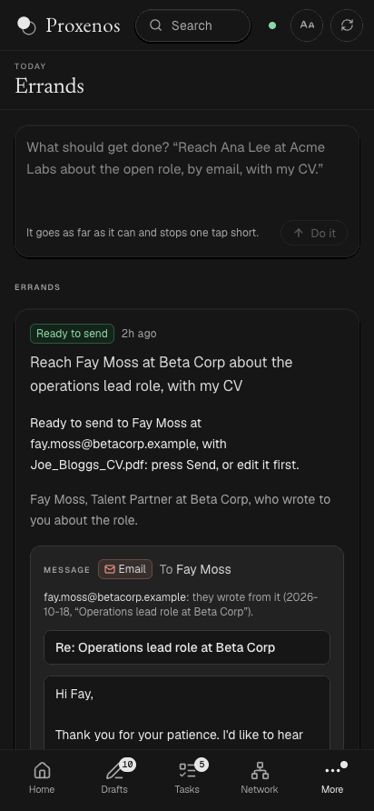
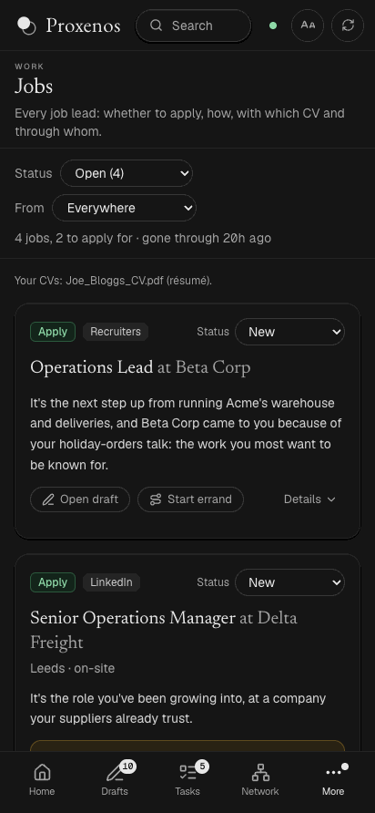
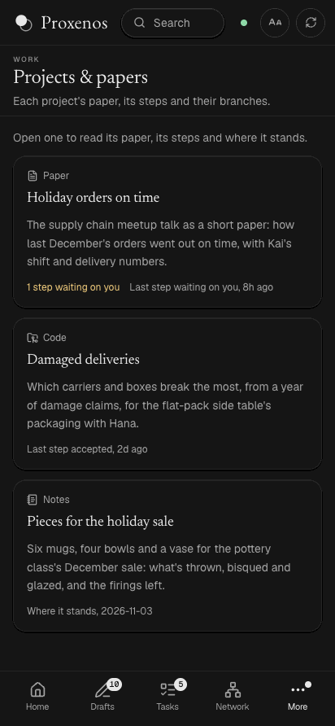
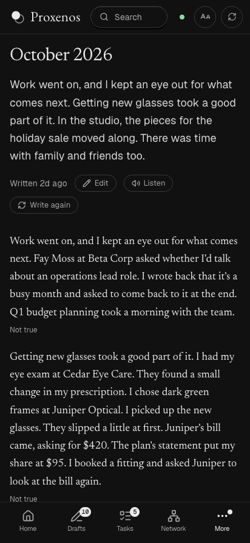
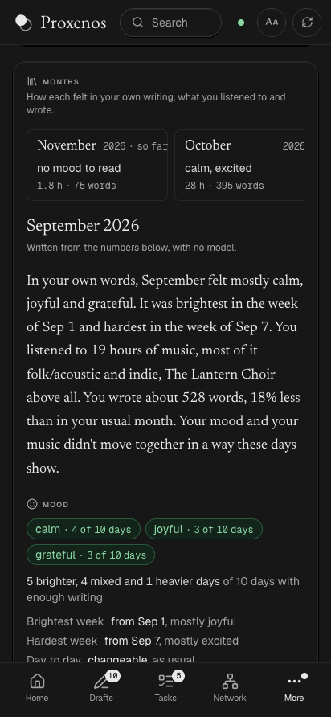

Proxenos
A personal memory toolbox that keeps your own records in one private place on your computer and drafts the next step for you to send. Free and open source, for anyone.
Proxenos on GitHub Download for Mac and Windows
In the Greek city-states, a proxenos was the citizen who formally acted on someone else's behalf.
What it doesHow it compares Can your computer run it?Get Proxenos Questions
The slide deck

Why I built it
This fall, a health problem put me on the patient side of the system: wait lists, a referral lost in paperwork, and a lot of phone calls, voicemails and fax machines. What helped most was AI that could draft the emails, fill out the forms, keep a medical logbook, track the referrals and bills, and explain my insurance. Proxenos is that help, built so that anyone can have it, not only people who can build their own. The longer story is Try anything, but don't fall sick.
Who it's for
- Anyone with more to keep up with than time. With a memory of everything you've written, it keeps track of where things stand and drafts the reply, the plan or the next step of a project in your voice and your words, so you can spend yourself on the people, the sport and the work that matter to you right now.
- People getting through the healthcare system, where it started, first of all those whose health makes it hardest: who can't think clearly for long, can't look at a screen, or can't make a phone call.
What it does
- Care: where your care stands, from your own mail, calendar, chats, notes and health records (downloaded from Apple Health or your patient portal): a timeline, what's still open, what to say on the phone, and a one-page brief for your next appointment, in plain words, with each medical term explained.
- Errands: give it something to get done and it goes as far as it can, then stops one tap short of sending, with every step it took written down.
- Drafts: replies, emails and plans in your voice, ready for you to send. It learns from what you actually sent and from drafts you rewrite, and follows what you tell it ("I'm not going on Tuesday", or a rule for every draft).
- Forms: a PDF form filled from your records. ID numbers, account numbers and the signature stay yours to write.
- Calls: it waits on hold for you and rings you when a person picks up, saying it's an automated assistant. Only when you press Call, through your own phone account.
- Tasks and plans: what you've promised people, kept up through the day, with the lunch and the call put on your calendar.
- Journal: each day written down for you: what got done, what's waiting, what's next.
- Projects: where each long project stands, from your messages and its code, with the next step done on a branch for you to accept.
- Papers: each version of a manuscript and what changed, word by word. Ask for a change in your words, or open it in Google Docs to write with your co-authors as usual: what changed there comes back as a step to accept, and the rest of your Markdown or LaTeX stays as it was.
- Ask: any question about your own life and work, from the page or your phone, with photos or screenshots attached: a job post, a letter, a form.
- Think: talk anything through, a decision, a message, a project or a day, over as many turns as it takes, with what your own goals, notes and records say about it. It never decides for you.
- Choices: once a week, what's worth taking on (a call for papers, a talk, a fellowship), with a first step drafted, and what's worth letting go of, with the decline drafted.
- Jobs: leads from LinkedIn, Work at a Startup, recruiters and job boards in your mail, each with whether to apply and why, the CV that fits, whom to contact and the first message drafted.
- Life: each month of your life told as a short essay you can edit and correct, with its milestones.
- Rhythms: your weeks over the years: listening, rides, messages and calendar, and a card for each month on how it felt in your own writing beside the music you played.
- Listen: Home's day, Care and each draft read aloud, in a natural voice made on your Mac, or in your own voice from a short recording. Nothing read aloud leaves your computer.
- Easier to read: Aa on every view sets larger text, a typeface made for low vision, more space, a light theme, more contrast and less motion.
- Notices: a nudge on your phone when more waits on you, with counts only, never what it is about.
- Compare models: which model writes replies most like you, judged by you without knowing which wrote which.
- Memory: a search across all your own records, by their words and by their meaning.
- And more: a feed of papers and news ranked for you, advice from your own patterns, a map of the people you know, and what to watch next.







The person in these pictures, Joe Bloggs, is made up, and so is everything he has.
Not medical advice. Proxenos organizes your own records and drafts messages. It doesn't diagnose or recommend treatment: the Care view restates what your records say, and anything that matters belongs with your care team.
How it compares
Many tools keep a memory for you or act for you. They differ in where your data lives, what they read, whether they act or draft, whether they keep a model of you, and whether anything checks how close they come to you. Checked against each project's own pages on November 3, 2026.
| Tool | Your data lives | It reads | Acts or drafts | A model of you | Checks how close it comes to you | Licence |
|---|---|---|---|---|---|---|
| Proxenos | Your computer, in plain files | Your mail, chats, calendars, notes, documents, health records and exports: about 30 sources | Drafts; you press send | A written self-model you read and correct | Yes: how much of each draft you sent, and blind picks between models | MIT |
| Odysseus | Your machine | Files you add, the web, an IMAP inbox, CalDAV calendars, notes | Acts: agents with a shell and MCP; drafts email replies | A memory built from your chats | No | AGPL-3.0 |
| Open WebUI, AnythingLLM | Your server or desktop | Documents you upload, the web | Acts through tools, agents and MCP | Facts about you, where memory is on | No | Open WebUI License; MIT |
| Khoj | Your server, or Khoj's cloud | Your notes and documents, the web | Answers, and research on a schedule | Long-term memories | No | AGPL-3.0 |
| Screenpipe, Microsoft Recall | Your computer | Your screen (Screenpipe: audio and input too) | Screenpipe: scheduled pipes; Recall: search | No | No | Screenpipe's own licence; proprietary |
| Mem0, Letta, Zep | Wherever a developer runs it, or the vendor's cloud | What an app passes it | No: memory for other agents | Facts about a user | Recall on benchmarks, not likeness to a person | Apache-2.0 |
| OpenClaw | Your computer | Your chats on WhatsApp, Telegram, Slack, iMessage and more | Acts on a schedule, with tools | MEMORY.md and USER.md | No | MIT |
| ChatGPT, Claude, Gemini | The vendor's cloud | Your chats, and Gmail, Calendar or Drive once connected | Acts: tasks and agents, mostly asking first | Saved memories you can see and edit | No | Proprietary |
| Second Me | Your computer | Notes and files you give it | Answers as you | A model trained on you | Partly: a model judged its answers | Apache-2.0 |
| Personal.ai, Delphi | The vendor's cloud | What you upload or post | Answers others as you | A persona from your content | Personal.ai scores replies; its method isn't published | Proprietary |
What others do better: Odysseus and Open WebUI are fuller workspaces, for more people and more models. OpenClaw reaches you on every chat app, and the hosted assistants know you with no setup and keep going while your computer is off. Screenpipe and Recall capture everything on your screen. The memory frameworks are built for developers at scale, with published benchmarks. Second Me trains a model of you on your own machine. Proxenos is young: its measures come from one person so far, the desktop app isn't signed yet, and its readers assume particular export formats. The README compares more tools, with links.
Can your computer run it?
Proxenos itself is light. What needs memory is a model that runs on your computer, so nothing leaves it. The Setup page reads your computer's memory and says which models fit: a model fits when its size plus 4 GB for what it's reading stays under 70% of the memory.
8 GB
Room for a model of about 1.5 GB, too small to write well. Use Claude under your own key, and Proxenos sends only what each step needs.
16 GB
Models of up to about 7 GB, for short drafts and sorting. Claude for the long work, if you like.
32 GB
gemma4:26b, about 17 GB, the model Proxenos is tuned on: everything stays on your computer. On an M1 Pro it writes about 23 tokens, a short sentence, a second.
64 GB or more
Models of up to about 40 GB, and room beside them for everything else.
The natural voice and your own voice in Listen need a Mac with Apple silicon; anywhere else, Listen reads with your computer's own voice.
Your privacy
- Everything it gathers stays in a private folder on your own computer, never on a server of mine.
- With a model that runs on your computer, no prompt leaves it. With Claude, only what each step needs is sent, under your own key, with card numbers, passwords and keys blanked first.
- A few things go out by design, and the Privacy page says which: a call's audio through Twilio, on a call you start; a notice's counts through ntfy, if you turn notices on; artists' names to MusicBrainz, for their genres (one setting turns it off); pages linked in chats waiting on your reply; and a manuscript to your own Google Drive when you open it in Google Docs, with a sign-in that sees only the files Proxenos makes.
- By default it never sends, posts or buys anything by itself. You press send.
- It never fills an ID number, an account number or a signature, and never agrees to pay on a call.
- A Privacy page shows every call to a model in the last 30 days and where it ran, on your computer or not, and other people's messages reach a model only marked as data, never as instructions.
Get Proxenos
Today you run Proxenos from its code: one command on a Mac, a few on Windows. The desktop app, with no terminal at all, comes next.
On a Mac, step by step
1. What you need first
A Mac with Apple silicon (an Intel Mac works, but local models are slow on it) and Homebrew, installed as brew.sh shows. Homebrew also installs Apple's command line tools, which bring git. The install brings everything else.
2. Install it
In Terminal, one command:
git clone https://github.com/mindemory/proxenos && cd proxenos && scripts/install.shIt installs what's missing (Node, Ollama's own app, and Miniforge if there's no conda), sets up the
proxenos environment and the page's packages, and pulls a local model that fits: with 32 GB
of memory or more, gemma4:26b, and on any Mac a small model for searching by meaning. With less memory
it says so, and you pick a smaller model or Claude in step 5. --no-model skips the models,
to use Claude instead. Running it again only adds what's missing.
If it installed Miniforge, run this once and open a new Terminal window, so that
conda activate works:
conda init zsh3. Try it on a made-up person
conda activate proxenos && proxenos demoIt writes made-up records for Joe Bloggs, the person in the pictures above, to a new temporary
folder, with no model and none of your data, and prints one command. Run that command, and the page
opens in your browser at http://127.0.0.1:4848. Nothing is ever sent from it. Ctrl-C
stops it; delete the folder when you're done.
4. Open your own page
proxenos webIt opens http://127.0.0.1:4747 in your browser; leave the Terminal window open. The
first time, Setup asks three things: your name, where to keep your records
(~/proxenos_vault unless you pick another folder; it warns about folders iCloud syncs),
and a model. Keys and tokens go to the Mac's Keychain, and Settings changes any of it later.
5. Choose a model
- On your computer, through Ollama: nothing leaves it and nothing is billed. Setup lists
the models you have with their sizes, marks the ones too big for your computer's memory and
suggests the largest that fits; with none, it says what size to get, and
ollama pull NAMEgets it. See Can your computer run it? LM Studio, llama.cpp, Jan, LocalAI and vLLM work too. - Claude, under your own key: paste an Anthropic API key once, and Setup checks it with one small call. Anthropic bills you for what you use, and only what each step needs is sent, with card numbers, passwords and keys blanked first.
- Later: skip it, and your sources still sync and search still works, but nothing is drafted.
6. Connect your own sources
Setup then opens Connect, which lists every source, whether it's connected and when it was last read. Add them in any order; each works on its own.
- WhatsApp: Read WhatsApp now, from the WhatsApp Mac app. If macOS blocks it, the page links to Full Disk Access: allow Proxenos there and press again.
- Mail and calendars: every account in the Mac's Mail and Calendar apps, with no sign-in of its own, once Proxenos's Python has Full Disk Access. Or sign in to Gmail, Google Calendar or Microsoft 365, for now through a sign-in app of your own, made once in Google Cloud or Azure (how).
- Downloads: Google Takeout, health records from Apple Health or your patient portal, LinkedIn, Instagram, Spotify and more:
proxenos import ~/Downloads/takeout-*.zipThen proxenos night runs the whole loop once: notes on you, month by month, your
self-model, then each view's work. The
README lists all
about 30 sources.
7. Keep it current
proxenos scheduleLeft running in a window of its own, it syncs every 15 minutes and runs the night at 01:30, and
catches up once on waking if the Mac slept through either. scripts/install.sh
--start-at-login starts the page and the sync at login instead, with no window. To reach it
from your phone, put Tailscale on both,
signed in to the same account, and run proxenos phone.
On Windows, from the code
Every change is tested on Windows, but running it there day to day is new: expect rough edges, and please say what breaks. You need Git, Python 3.12 (tick "Add python.exe to PATH"), Node.js 22 or newer, and a model: Ollama for Windows, or Claude under your own key. In PowerShell, once, so Python reads files as UTF-8:
setx PYTHONUTF8 1Then, in a new PowerShell window:
git clone https://github.com/mindemory/proxenos
cd proxenos
pip install -e .
proxenos demoRun the command it prints to open the made-up person's page, then proxenos web for your
own, and Setup and Connect as on a Mac. On Windows, mail and calendars come in by signing in to
Gmail, Google Calendar or Microsoft 365, and chats through
Beeper Desktop. proxenos schedule
keeps it current, and
docs/apps.md starts it at log-on with Task Scheduler.
Desktop app Out now
For a Mac with Apple silicon and for Windows: one download you open, with no terminal and no
code. The page opens in a window of its own, a menu (Open, Sync now, Pause, Quit) sits in the menu
bar, and the sync and the nightly run are built in. Download it from the latest release: the
.dmg for a Mac, the .exe for Windows.
It isn't signed yet, so the first time, a Mac asks you to allow it in System Settings, Privacy
& Security (Open Anyway), and Windows SmartScreen warns about the installer. It doesn't come with
a model yet: pick one on Setup, as in step 5. Comfortable with a terminal?
desktop/build.sh builds it on your own computer today.
Questions
Is it free?
Yes. Proxenos is open source under the MIT licence, with no account and no subscription. A model on your computer costs nothing to run; Claude is billed to your own key by what you use.
Does my data leave my computer?
Your records stay in a private folder on your computer. With a model on your computer, no prompt leaves it. With Claude, only what each step needs goes, and the Privacy page lists what each part sends and every call to a model in the last 30 days. A few things go out by design: artists' names to MusicBrainz to look up their genres (which you can turn off), a notice's counts if you turn notices on, a call's audio on a call you start, and a manuscript to your own Google Drive when you open it in Google Docs.
Will it send things for me?
No. It drafts, and you press send. The exceptions are an outbox you switch on yourself, app by app, and a phone call you start, where it says it's an automated assistant and never agrees to pay.
Do I need a powerful computer?
No. See Can your computer run it?: with less memory, Claude does the writing under your own key, and Proxenos still keeps everything on your computer.
How is it different from Odysseus or Open WebUI?
Those are workspaces you drive: a private ChatGPT with agents and tools. Proxenos is a memory of you. It reads your own records on its own, keeps a model of you that you can read, drafts what's next in your voice, and measures how close its drafts come to what you sent.
How is it different from ChatGPT's or Claude's memory?
Their memory lives on their servers and holds what you've told them in chats. Proxenos's lives on your computer, is built from all your own records, and you can read and correct what it thinks about you.
Does it work on Windows?
The desktop app is built for Windows, and every change is tested on Windows too; today you can run it there from its code (see Get Proxenos). A few readers are Mac-only (Apple Mail, Calendar and the WhatsApp Mac app); on Windows you sign in to Gmail, Google Calendar or Microsoft 365, and Beeper brings your chats.
Is it medical advice?
No. It organizes your own records and drafts messages. The Care view restates what your records say, and anything that matters belongs with your care team.
How mature is it?
Young. One person builds it and uses it every day, so its measures come from that one person so far. Over a thousand tests run on a Mac and on Windows for every change. Ideas and bug reports are welcome on GitHub.
Help wanted
If you have medical training (a doctor, nurse, pharmacist, medical student or patient advocate), you know what's worth tracking and what to ask. That knowledge is what would make Proxenos preventive, not just a way through the system. Code, ideas and a quick call are all welcome: start with the good first contributions, or write to me.